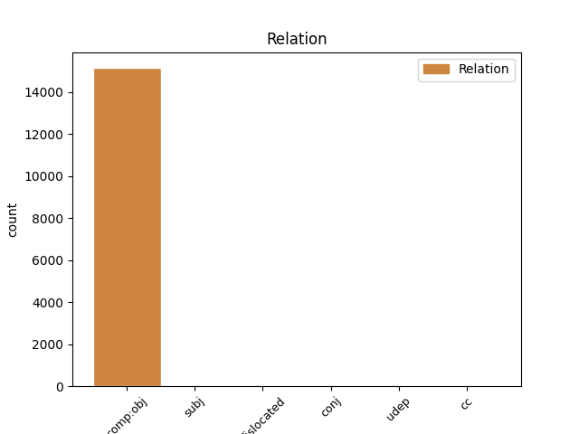
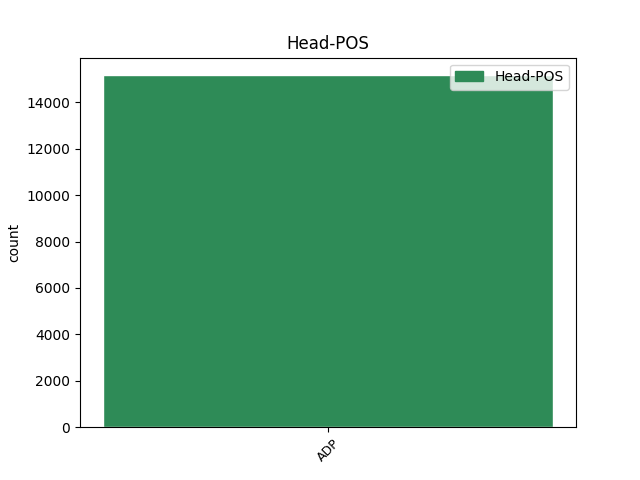
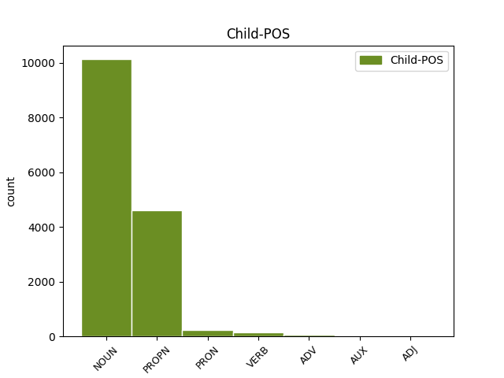

Distribution of features within this leaf



Agreement Rules sorted by frequency.
When the head token is ADP and the dependent token is NOUN.
1 इन _ _ _ _ 0 _ _ _
2 दोनों _ _ _ _ 0 _ _ _
3 देशों _ _ _ _ 0 _ _ _
4 के _ _ _ _ 0 _ _ _
5 बीच _ _ _ _ 0 _ _ _
6 रिश्ते _ _ _ _ 0 _ _ _
7 में _ _ _ _ 0 _ _ _
8 सुधार _ _ _ _ 0 _ _ _
9 से _ _ _ _ 0 _ _ _
10 करोड़ों _ _ _ _ 0 _ _ _
11 लोगों लोग NOUN NN Case=Acc|Gender=Masc|Number=Plur|Person=3 12 comp:obj _ ChunkId=NP4|ChunkType=head|Tam=0|Translit=logoṁ|Vib=0_का
12 का का ADP PSP AdpType=Post|Case=Nom|Gender=Masc|Number=Sing 0 _ _ _
13 भला _ _ _ _ 0 _ _ _
14 होगा _ _ _ _ 0 _ _ _
15 । _ _ _ _ 0 _ _ _
When the head token is ADP and the dependent token is PROPN.
1 उन्होंने _ _ _ _ 0 _ _ _
2 यहां _ _ _ _ 0 _ _ _
3 वेटिकन _ _ _ _ 0 _ _ _
4 दूतावास _ _ _ _ 0 _ _ _
5 में _ _ _ _ 0 _ _ _
6 एक _ _ _ _ 0 _ _ _
7 शोक _ _ _ _ 0 _ _ _
8 पुस्तिका _ _ _ _ 0 _ _ _
9 पर _ _ _ _ 0 _ _ _
10 हस्ताक्षर _ _ _ _ 0 _ _ _
11 कर _ _ _ _ 0 _ _ _
12 पोप _ _ _ _ 0 _ _ _
13 जॉन _ _ _ _ 0 _ _ _
14 पॉल _ _ _ _ 0 _ _ _
15 द्वितीय द्वितीय PROPN NNP Case=Acc|Gender=Masc|Number=Sing|Person=3 16 comp:obj _ ChunkId=NP6|ChunkType=head|Tam=0|Translit=dvitīya|Vib=0_का
16 के का ADP PSP AdpType=Post|Case=Acc|Gender=Masc|Number=Sing 0 _ _ _
17 निधन _ _ _ _ 0 _ _ _
18 पर _ _ _ _ 0 _ _ _
19 गहरा _ _ _ _ 0 _ _ _
20 दुख _ _ _ _ 0 _ _ _
21 प्रकट _ _ _ _ 0 _ _ _
22 किया _ _ _ _ 0 _ _ _
23 । _ _ _ _ 0 _ _ _
When the head token is ADP and the dependent token is PRON.
1 हमें _ _ _ _ 0 _ _ _
2 एक _ _ _ _ 0 _ _ _
3 दूसरे दूसरा PRON PRP Case=Acc|Gender=Masc|Number=Sing|Person=3|PronType=Prs 4 comp:obj _ ChunkId=NP2|ChunkType=head|Tam=0|Translit=dūsare|Vib=0_का
4 का का ADP PSP AdpType=Post|Case=Nom|Gender=Masc|Number=Sing 0 _ _ _
5 भरोसा _ _ _ _ 0 _ _ _
6 जीतने _ _ _ _ 0 _ _ _
7 के _ _ _ _ 0 _ _ _
8 प्रयास _ _ _ _ 0 _ _ _
9 करने _ _ _ _ 0 _ _ _
10 चाहिए _ _ _ _ 0 _ _ _
11 । _ _ _ _ 0 _ _ _
When the head token is ADP and the dependent token is VERB.
1 खान _ _ _ _ 0 _ _ _
2 के _ _ _ _ 0 _ _ _
3 संदिग्ध _ _ _ _ 0 _ _ _
4 परमाणु _ _ _ _ 0 _ _ _
5 ग्राहकों _ _ _ _ 0 _ _ _
6 की _ _ _ _ 0 _ _ _
7 सूची _ _ _ _ 0 _ _ _
8 को _ _ _ _ 0 _ _ _
9 आश्चर्य _ _ _ _ 0 _ _ _
10 में _ _ _ _ 0 _ _ _
11 डाल _ _ _ _ 0 _ _ _
12 देने _ _ _ _ 0 _ _ _
13 वाली _ _ _ _ 0 _ _ _
14 बताते _ _ _ _ 0 _ _ _
15 हुए _ _ _ _ 0 _ _ _
16 टाईम _ _ _ _ 0 _ _ _
17 पत्रिका _ _ _ _ 0 _ _ _
18 के _ _ _ _ 0 _ _ _
19 हाल _ _ _ _ 0 _ _ _
20 के _ _ _ _ 0 _ _ _
21 अंक _ _ _ _ 0 _ _ _
22 में _ _ _ _ 0 _ _ _
23 कहा _ _ _ _ 0 _ _ _
24 गया _ _ _ _ 0 _ _ _
25 कि _ _ _ _ 0 _ _ _
26 पाकिस्तान _ _ _ _ 0 _ _ _
27 की _ _ _ _ 0 _ _ _
28 परमाणु _ _ _ _ 0 _ _ _
29 शोध _ _ _ _ 0 _ _ _
30 प्रयोगशाला _ _ _ _ 0 _ _ _
31 का _ _ _ _ 0 _ _ _
32 प्रमुख _ _ _ _ 0 _ _ _
33 होने हो VERB VM Case=Acc|Gender=Masc|VerbForm=Inf 34 comp:obj _ ChunkId=VGNN2|ChunkType=head|Tam=nA|Translit=hone|Vib=ना_के_नाते
34 के के ADP PSP AdpType=Post|Case=Acc|Gender=Masc 0 _ _ _
35 नाते _ _ _ _ 0 _ _ _
36 खान _ _ _ _ 0 _ _ _
37 ने _ _ _ _ 0 _ _ _
38 एक _ _ _ _ 0 _ _ _
39 दशक _ _ _ _ 0 _ _ _
40 से _ _ _ _ 0 _ _ _
41 भी _ _ _ _ 0 _ _ _
42 अधिक _ _ _ _ 0 _ _ _
43 समय _ _ _ _ 0 _ _ _
44 में _ _ _ _ 0 _ _ _
45 पूरे _ _ _ _ 0 _ _ _
46 विश्व _ _ _ _ 0 _ _ _
47 की _ _ _ _ 0 _ _ _
48 यात्रा _ _ _ _ 0 _ _ _
49 की _ _ _ _ 0 _ _ _
50 । _ _ _ _ 0 _ _ _
When the head token is ADP and the dependent token is ADV.
1 उन्होंने _ _ _ _ 0 _ _ _
2 कहा _ _ _ _ 0 _ _ _
3 कि _ _ _ _ 0 _ _ _
4 दक्षिण _ _ _ _ 0 _ _ _
5 इराक़ _ _ _ _ 0 _ _ _
6 के _ _ _ _ 0 _ _ _
7 बसरा _ _ _ _ 0 _ _ _
8 क्षेत्र _ _ _ _ 0 _ _ _
9 के _ _ _ _ 0 _ _ _
10 आस _ _ _ _ 0 _ _ _
11 - _ _ _ _ 0 _ _ _
12 पास पास ADV NST AdpType=Post|Case=Acc|Gender=Masc|Number=Sing|Person=3 13 comp:obj _ AltTag=ADV-NOUN|ChunkId=NP4|ChunkType=head|Translit=pāsa|Vib=0_का
13 के का ADP PSP AdpType=Post|Case=Acc|Gender=Masc|Number=Plur 0 _ _ _
14 इलाकों _ _ _ _ 0 _ _ _
15 में _ _ _ _ 0 _ _ _
16 दोनों _ _ _ _ 0 _ _ _
17 देशों _ _ _ _ 0 _ _ _
18 द्वारा _ _ _ _ 0 _ _ _
19 संयुक्त _ _ _ _ 0 _ _ _
20 रूप _ _ _ _ 0 _ _ _
21 से _ _ _ _ 0 _ _ _
22 तेल _ _ _ _ 0 _ _ _
23 भंडार _ _ _ _ 0 _ _ _
24 का _ _ _ _ 0 _ _ _
25 पता _ _ _ _ 0 _ _ _
26 लगाया _ _ _ _ 0 _ _ _
27 जाएगा _ _ _ _ 0 _ _ _
28 । _ _ _ _ 0 _ _ _
When the head token is ADP and the dependent token is AUX.
1 हनुमान _ _ _ _ 0 _ _ _
2 को _ _ _ _ 0 _ _ _
3 लक्ष्मण _ _ _ _ 0 _ _ _
4 के _ _ _ _ 0 _ _ _
5 लिए _ _ _ _ 0 _ _ _
6 संजीवनी _ _ _ _ 0 _ _ _
7 बूटी _ _ _ _ 0 _ _ _
8 लाने _ _ _ _ 0 _ _ _
9 के _ _ _ _ 0 _ _ _
10 लिए _ _ _ _ 0 _ _ _
11 कितनी _ _ _ _ 0 _ _ _
12 रफ्तार _ _ _ _ 0 _ _ _
13 से _ _ _ _ 0 _ _ _
14 उड़ान _ _ _ _ 0 _ _ _
15 भरनी _ _ _ _ 0 _ _ _
16 पड़ी _ _ _ _ 0 _ _ _
17 थी _ _ _ _ 0 _ _ _
18 या _ _ _ _ 0 _ _ _
19 कुंभकरण _ _ _ _ 0 _ _ _
20 कितने _ _ _ _ 0 _ _ _
21 महीने _ _ _ _ 0 _ _ _
22 तक _ _ _ _ 0 _ _ _
23 सोता _ _ _ _ 0 _ _ _
24 था था AUX VAUX Gender=Masc|Mood=Ind|Number=Sing|Tense=Past|VerbForm=Fin 25 comp:obj _ ChunkId=VGF2|ChunkType=child|Tam=WA|Translit=thā|Vib=था
25 जैसे जैसा ADP PSP AdpType=Post|Case=Acc|Gender=Masc|Number=Plur 0 _ _ _
26 सवालों _ _ _ _ 0 _ _ _
27 का _ _ _ _ 0 _ _ _
28 वे _ _ _ _ 0 _ _ _
29 उत्तर _ _ _ _ 0 _ _ _
30 ढूंढ़ते _ _ _ _ 0 _ _ _
31 रहे _ _ _ _ 0 _ _ _
32 हैं _ _ _ _ 0 _ _ _
33 । _ _ _ _ 0 _ _ _
When the head token is ADP and the dependent token is ADJ.
1 महाजन _ _ _ _ 0 _ _ _
2 ने _ _ _ _ 0 _ _ _
3 लालू _ _ _ _ 0 _ _ _
4 यादव _ _ _ _ 0 _ _ _
5 द्वारा _ _ _ _ 0 _ _ _
6 मंगलवार _ _ _ _ 0 _ _ _
7 को _ _ _ _ 0 _ _ _
8 जारी _ _ _ _ 0 _ _ _
9 किए _ _ _ _ 0 _ _ _
10 गए _ _ _ _ 0 _ _ _
11 सेक्युलर _ _ _ _ 0 _ _ _
12 डेमोक्रेटिक _ _ _ _ 0 _ _ _
13 फ्रंट _ _ _ _ 0 _ _ _
14 ( _ _ _ _ 0 _ _ _
15 एसडीएफ _ _ _ _ 0 _ _ _
16 ) _ _ _ _ 0 _ _ _
17 के _ _ _ _ 0 _ _ _
18 घोषणा _ _ _ _ 0 _ _ _
19 को _ _ _ _ 0 _ _ _
20 हल्का हल्का ADJ JJ Case=Nom|Gender=Masc|Number=Sing 23 comp:obj _ ChunkId=JJP2|ChunkType=head|Translit=halkā
21 और _ _ _ _ 0 _ _ _
22 झूठ _ _ _ _ 0 _ _ _
23 का का ADP PSP AdpType=Post|Case=Nom|Gender=Masc|Number=Sing 0 _ _ _
24 पुलिंदा _ _ _ _ 0 _ _ _
25 करार _ _ _ _ 0 _ _ _
26 दिया _ _ _ _ 0 _ _ _
27 है _ _ _ _ 0 _ _ _
28 । _ _ _ _ 0 _ _ _
Disagree Examples:
1 यह _ _ _ _ 0 _ _ _
2 एशिया एशिया PROPN NNP Case=Acc|Gender=Masc|Number=Sing|Person=3 3 comp:obj _ ChunkId=NP|ChunkType=head|Tam=0|Translit=eśiyā|Vib=0_का
3 की का ADP PSP AdpType=Post|Case=Acc|Gender=Fem|Number=Plur 0 _ _ _
4 सबसे _ _ _ _ 0 _ _ _
5 बड़ी _ _ _ _ 0 _ _ _
6 मस्जिदों _ _ _ _ 0 _ _ _
7 में _ _ _ _ 0 _ _ _
8 से _ _ _ _ 0 _ _ _
9 एक _ _ _ _ 0 _ _ _
10 है _ _ _ _ 0 _ _ _
11 । _ _ _ _ 0 _ _ _
1 शौकत _ _ _ _ 0 _ _ _
2 महल _ _ _ _ 0 _ _ _
3 के _ _ _ _ 0 _ _ _
4 सामने _ _ _ _ 0 _ _ _
5 बड़ी _ _ _ _ 0 _ _ _
6 झील झील NOUN NN Case=Acc|Gender=Fem|Number=Sing|Person=3 7 comp:obj _ ChunkId=NP2|ChunkType=head|Tam=0|Translit=jhīla|Vib=0_का
7 के का ADP PSP AdpType=Post|Case=Acc|Gender=Masc|Number=Sing 0 _ _ _
8 किनारे _ _ _ _ 0 _ _ _
9 स्थित _ _ _ _ 0 _ _ _
10 वास्तुकला _ _ _ _ 0 _ _ _
11 का _ _ _ _ 0 _ _ _
12 यह _ _ _ _ 0 _ _ _
13 खूबसूरत _ _ _ _ 0 _ _ _
14 नमूना _ _ _ _ 0 _ _ _
15 कुदसिया _ _ _ _ 0 _ _ _
16 बेगम _ _ _ _ 0 _ _ _
17 के _ _ _ _ 0 _ _ _
18 काल _ _ _ _ 0 _ _ _
19 का _ _ _ _ 0 _ _ _
20 है _ _ _ _ 0 _ _ _
21 जिन्हें _ _ _ _ 0 _ _ _
22 गोहर _ _ _ _ 0 _ _ _
23 बेगम _ _ _ _ 0 _ _ _
24 भी _ _ _ _ 0 _ _ _
25 कहा _ _ _ _ 0 _ _ _
26 जाता _ _ _ _ 0 _ _ _
27 था _ _ _ _ 0 _ _ _
28 । _ _ _ _ 0 _ _ _
1 शौकत _ _ _ _ 0 _ _ _
2 महल _ _ _ _ 0 _ _ _
3 के _ _ _ _ 0 _ _ _
4 सामने _ _ _ _ 0 _ _ _
5 बड़ी _ _ _ _ 0 _ _ _
6 झील _ _ _ _ 0 _ _ _
7 के _ _ _ _ 0 _ _ _
8 किनारे _ _ _ _ 0 _ _ _
9 स्थित _ _ _ _ 0 _ _ _
10 वास्तुकला वास्तुकला NOUN NN Case=Acc|Gender=Fem|Number=Sing|Person=3 11 comp:obj _ ChunkId=NP4|ChunkType=head|Tam=0|Translit=vāstukalā|Vib=0_का
11 का का ADP PSP AdpType=Post|Case=Nom|Gender=Masc|Number=Sing 0 _ _ _
12 यह _ _ _ _ 0 _ _ _
13 खूबसूरत _ _ _ _ 0 _ _ _
14 नमूना _ _ _ _ 0 _ _ _
15 कुदसिया _ _ _ _ 0 _ _ _
16 बेगम _ _ _ _ 0 _ _ _
17 के _ _ _ _ 0 _ _ _
18 काल _ _ _ _ 0 _ _ _
19 का _ _ _ _ 0 _ _ _
20 है _ _ _ _ 0 _ _ _
21 जिन्हें _ _ _ _ 0 _ _ _
22 गोहर _ _ _ _ 0 _ _ _
23 बेगम _ _ _ _ 0 _ _ _
24 भी _ _ _ _ 0 _ _ _
25 कहा _ _ _ _ 0 _ _ _
26 जाता _ _ _ _ 0 _ _ _
27 था _ _ _ _ 0 _ _ _
28 । _ _ _ _ 0 _ _ _
1 शौकत _ _ _ _ 0 _ _ _
2 महल _ _ _ _ 0 _ _ _
3 के _ _ _ _ 0 _ _ _
4 सामने _ _ _ _ 0 _ _ _
5 बड़ी _ _ _ _ 0 _ _ _
6 झील _ _ _ _ 0 _ _ _
7 के _ _ _ _ 0 _ _ _
8 किनारे _ _ _ _ 0 _ _ _
9 स्थित _ _ _ _ 0 _ _ _
10 वास्तुकला _ _ _ _ 0 _ _ _
11 का _ _ _ _ 0 _ _ _
12 यह _ _ _ _ 0 _ _ _
13 खूबसूरत _ _ _ _ 0 _ _ _
14 नमूना _ _ _ _ 0 _ _ _
15 कुदसिया _ _ _ _ 0 _ _ _
16 बेगम बेगम PROPN NNP Case=Acc|Gender=Fem|Number=Sing|Person=3 17 comp:obj _ ChunkId=NP6|ChunkType=head|Tam=0|Translit=begama|Vib=0_का
17 के का ADP PSP AdpType=Post|Case=Acc|Gender=Masc|Number=Sing 0 _ _ _
18 काल _ _ _ _ 0 _ _ _
19 का _ _ _ _ 0 _ _ _
20 है _ _ _ _ 0 _ _ _
21 जिन्हें _ _ _ _ 0 _ _ _
22 गोहर _ _ _ _ 0 _ _ _
23 बेगम _ _ _ _ 0 _ _ _
24 भी _ _ _ _ 0 _ _ _
25 कहा _ _ _ _ 0 _ _ _
26 जाता _ _ _ _ 0 _ _ _
27 था _ _ _ _ 0 _ _ _
28 । _ _ _ _ 0 _ _ _
1 यह _ _ _ _ 0 _ _ _
2 हिंदू _ _ _ _ 0 _ _ _
3 और _ _ _ _ 0 _ _ _
4 मुगल _ _ _ _ 0 _ _ _
5 कला कला NOUN NN Case=Acc|Gender=Fem|Number=Sing|Person=3 6 comp:obj _ ChunkId=NP2|ChunkType=head|Tam=0|Translit=kalā|Vib=0_का
6 का का ADP PSP AdpType=Post|Case=Nom|Gender=Masc|Number=Sing 0 _ _ _
7 अद्भुत _ _ _ _ 0 _ _ _
8 संगम _ _ _ _ 0 _ _ _
9 है _ _ _ _ 0 _ _ _
10 । _ _ _ _ 0 _ _ _